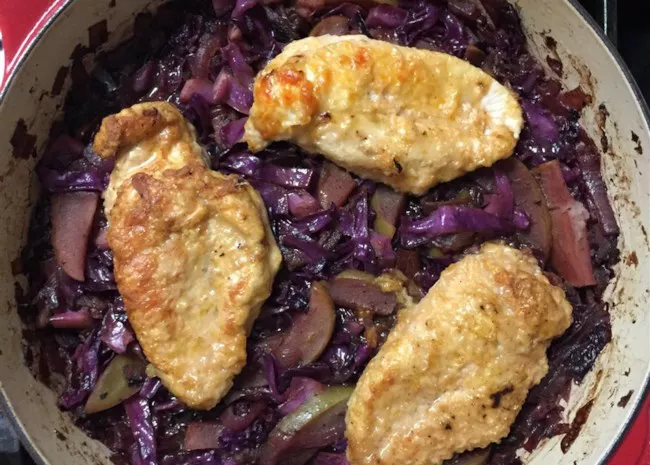

Oktoberfest Chicken and Red Cabbage

One of the most famous German dishes
I adore Bavarian cuisine! And since there's no good German food here (while I lived in San Francisco, my husband and I ate at wonderful German/Hungarian restaurants there), I have to make my own...This recipe is crazy simple.
Ingredients
- 4 slices bacon
- 1 tablespoon bacon drippings
- ¼ cup all-purpose flour
- ½ teaspoon kosher salt
- ½ teaspoon smoked paprika
- 2 pounds skinless chicken thighs
- 1 red onion, sliced
- 1 large apple, cored and sliced
- 1 head red cabbage, cored and sliced
- ½ cup red wine vinegar
- ¼ cup dry red wine
- ¼ cup brown sugar
- ½ teaspoon ground cinnamon (Optional)
Directions
- Preheat oven to 350 degrees F (175 degrees C).
- Place bacon in a large oven-safe or cast-iron skillet and cook over medium-high heat, turning occasionally, until evenly browned, about 10 minutes. Drain the bacon slices on paper towels. When cool, crumble bacon; leave bacon drippings in the skillet.
- Whisk flour, kosher salt, and smoked paprika together in a bowl. Coat chicken thighs in the seasoned flour and brown on both sides in the hot bacon fat over medium heat, about 5 minutes per side; transfer chicken to a plate. Drain bacon grease except for 1 tablespoon; cook and stir onion and apple until onion is translucent and apple is softened, about 5 minutes. Stir red cabbage and bacon into onion-apple mixture, sprinkle with a pinch of kosher salt, and cook, stirring often, until cabbage is softened, 5 to 8 minutes.
- Pour red wine vinegar and red wine into skillet. Stir in brown sugar and cinnamon and bring cabbage mixture to a boil; cook until sauce is reduced by half, stirring often, about 10 minutes. Arrange chicken thighs on top of cabbage in the skillet.
- Bake in the preheated oven until cabbage is tender and chicken is cooked through, about 40 minutes. An instant-read meat thermometer inserted into the thickest part of a thigh should read at least 160 degrees F (70 degrees C).
hh